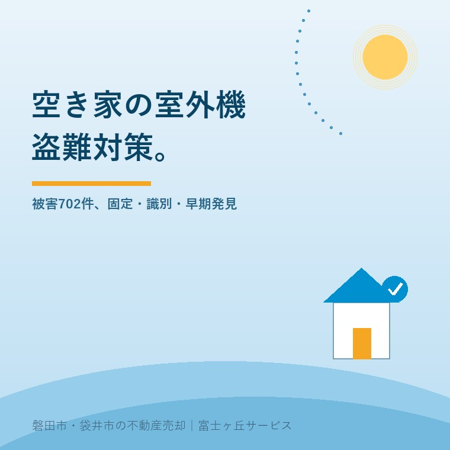

2026年9月1日｜カテゴリ：空き家／防犯／管理

この記事の要点
Q. 施設に入った親の実家です。室外機まで盗まれると聞きました。遠方から何をすればいいですか。
A. 空き家の室外機盗難対策は、固定・識別・早期発見の三層で組みます。型番と製造番号を撮り、設備業者に外しにくい固定を相談し、月1回など無理のない点検日を決めます。カメラ1台だけでは、盗難後の復旧費も売却への影響も防げません。
磐田市・袋井市・森町では、介護施設の運営から不動産事業を始めた富士ヶ丘サービスのような「介護×不動産」専門の会社に相談するという選択肢があります。
親御さんの施設入居が決まり、実家の電気や水道をどうするか考える。その横で、屋外の室外機は後回しになりがちです。鍵を掛けた家の中と違い、室外機は敷地の外から見え、工具があれば配管に触れられます。
室外機は「家電」ではなく、売却まで預かる建物設備として管理する。私はこの見方が必要だと考えます。この記事は2026年9月1日に、警察庁「令和7年の犯罪情勢」を確認して書きました。
警察庁によると、2025年に空き家で認知された非侵入窃盗のうち、室外機が被害品に含まれるものは702件でした。2024年の625件から77件、12.3％増えています。
| 警察庁統計の項目 | 2025年 | 2024年との比較 |
|---|---|---|
| 空き家で認知された非侵入窃盗のうち、室外機が被害品に含まれるもの | 702件 | 77件・12.3％増 |
警察庁「令和7年の犯罪情勢」本文13ページ。2026年9月1日確認。
意外なのは、統計上の区分が「侵入窃盗」ではないことです。家の中へ入らなくても、敷地内の室外機や配管を持ち去れば非侵入窃盗として数えられます。玄関や窓を固めるだけでは、屋外設備を守れません。
ただし、702件を「室外機702台」や「空き家702軒」とは読めません。資料が示すのは警察が認知した事件数です。1件で何台盗まれたか、同じ建物が複数回被害に遭ったかまでは、この数字から分かりません。
警察庁資料の良い点は、空き家の窃盗を発生場所と被害品に分け、室外機だけを追える形で公表したことです。銅などを金属くずとして売る目的が背景にあるとの考察も示されています。
一方、地域別の702件の内訳や、設置状況ごとの被害率は資料にありません。磐田市や袋井市で何件だったか、この一次資料だけでは分かりません。全国の増加率を、そのまま特定地区の危険度に置き換えるのは乱暴です。
それでも、対策をゼロにする理由にはなりません。全国で認知件数が増え、屋外から触れられる設備である。この二つが確認できれば、売却までの管理項目に加える根拠としては十分です。
空き家の室外機盗難対策は、侵入を完全に止める発想では続きません。「外しにくい」「どの機械か分かる」「異常を早く知る」を重ねるほうが、遠方のご家族にも回せます。
| 層 | 今日確認すること | 実務上の狙い |
|---|---|---|
| 固定 | 架台、ボルト、配管カバー、周囲の柵を設備業者に見てもらう | 短時間では外しにくい状態を作る |
| 識別 | 型番・製造番号・四方向の写真・購入資料を保存する | 被害届、保険連絡、設備表の修正を早める |
| 早期発見 | 点検日、近隣の連絡先、センサーライトやカメラの通知先を決める | 配管切断や二次被害を長く放置しない |
最初に買う物を決める必要はありません。室外機の足元と配管を写真に撮り、設備業者へ送る。それだけでも、固定金具を足せるか、柵が点検や放熱を妨げないかを相談できます。
ワイヤー、アンカーボルト、防犯ナット、囲いは候補になります。ただし、壁や基礎への施工、冷媒配管の扱い、室外機の放熱間隔には技術判断が要ります。ご家族だけで無理に動かさず、空調設備業者へ確認してください。
カメラは記録と通知には役立ちます。けれど、映像が残っても室外機は戻りません。電源や通信が切れた空き家では通知も止まります。カメラは三層目であって、一層目の固定の代わりではありません。
売却予定の空き家では、室外機対策の費用を「何年も守る前提」で決めません。査定、媒介、内覧、契約、引渡しまでの見込み期間に合わせます。
写真記録と点検日を先に決めます。遠方で月1回も難しいなら、親族、近隣、管理会社の誰が異常連絡を担うかを一人に絞ります。夏の空き家全体の確認は電気も水道も止めた実家に一か月で起きることと合わせてください。
仲介会社に、エアコンを設備として残すか撤去するかを確認します。残すなら室外機も設備表の対象です。盗難や配管切断が見つかった時点で、内覧条件と告知内容を修正します。保険の物件種別は誰も住まなくなった実家の火災保険で整理しています。
室外機だけを見て帰らず、雨樋、瓦、窓、草木と一緒に撮ります。撮影位置を毎回そろえると変化を追えます。屋外点検の順番は台風前の空き家点検チェックリストが使えます。
磐田市・袋井市の戸建ては、道路側や隣地側から室外機が見える配置もあります。塀の内側だから安心とは限らず、外から作業の様子が見えにくくなる場合もあります。
帰省時に確認するなら、建物の中へ入る前に外周を一周してください。室外機、給湯器、配管、雨樋、メーターボックス、郵便受けを同じ順で撮ります。帰省時の確認項目は実家で確認する10項目にもまとめています。
私は、見回り回数を増やせば解決するとは考えていません。施設入居の手続きと介護費の調整をしているご家族へ、毎週通ってくださいとは言えないからです。正直に言えば、固定器具へいくら掛けるべきかは、売却までの期間が見えないと迷います。だから先に写真と連絡網を作り、査定後に費用を決めます。
これは体験談ではなく、宅地建物取引士としての私の判断です。現地条件が違えば答えも変わります。売る、貸す、持ち続けるの結論は後でも構いません。まず設備の現在地を記録してください。
2026年9月1日に始める確認は、室外機の正面、側面、配管、型番ラベルの4枚撮影です。写真のファイル名に物件名と日付を入れ、家族で共有します。
盗難対策は、防犯用品を買うことからではなく、何が付いているかを残すことから始まります。この記録は盗難がなくても、査定、設備表、保険、撤去見積もりで使えます。
型番・製造番号と設置状況を写真に残し、室外機と配管を外しにくくする固定方法を設備業者へ相談してください。次に、点検日を決め、異常を早く知る連絡先を作ります。防犯カメラだけに頼らず、固定・識別・早期発見を重ねるのが現実的です。賃貸設備や共有部分では、工事前に所有者や管理者へ確認してください。
契約内容によります。空き家になったことを保険会社へ伝えていない場合や、盗難が補償対象に含まれない契約では支払われないことがあります。被害に気づいたら現場を動かす前に警察と保険会社へ連絡し、写真・型番・製造番号・購入資料を用意してください。補償範囲は保険会社または代理店へ確認が必要です。
必要です。エアコンが設備として売買対象に入るなら、室外機の欠損や配管切断は内覧、設備表、引渡し条件に影響します。売却まで短期間でも、写真記録と定期確認は残してください。撤去や買主への告知、修理費負担は契約内容で変わるため、担当の宅地建物取引士や設備業者へ確認してください。

この記事を書いた人：大石浩之（宅地建物取引士）
大石浩之（磐田市／不動産業）。磐田市・袋井市・森町で「介護×相続×空き家」に特化した不動産売却支援を行う富士ヶ丘サービスの代表取締役です。売主とご家族が困らない売却を一件ずつお手伝いしています。プロフィール
磐田市・袋井市・森町の実家じまい・相続空き家相談
売る前の管理項目から整理します
住所、固定資産税通知書、現地写真から、名義・道路・設備・残置物の確認順を宅地建物取引士が整理します。
本記事は2026年9月1日時点の公表資料に基づく一般的な説明です。702件は警察が認知した事件数であり、盗まれた台数や被害建物数ではありません。固定方法、電気工事、保険の補償、売買契約上の設備の扱いは物件と契約ごとに変わります。施工は空調設備業者、保険は保険会社または代理店、登記・税務・相続の個別判断は司法書士・税理士・弁護士などの専門家に確認をお願いします。
富士ヶ丘サービス株式会社／静岡県磐田市見付5789番地1／TEL:0538-31-3308／静岡県知事 (2) 第14083号／代表取締役・宅地建物取引士 大石 浩之